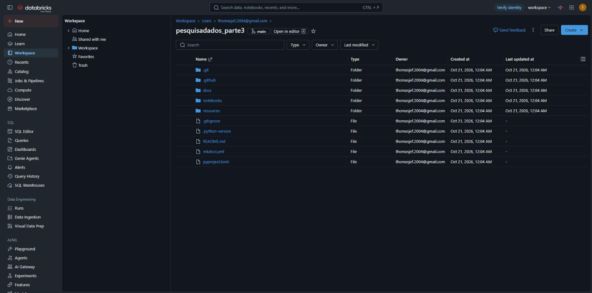
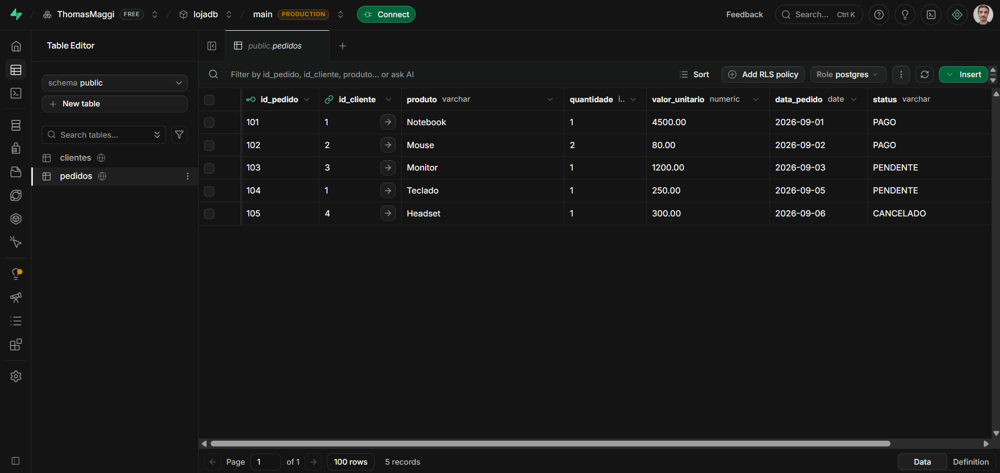

Ambiente Databricks
Em poucas palavras: o Databricks é um "escritório de dados" pronto na nuvem. Basta entrar pelo navegador: o banco de dados, as pastas de arquivos, as tabelas e a automação ficam todos no mesmo lugar, sem instalar nada no computador.
Databricks Free Edition
O Databricks é uma plataforma de dados em nuvem no modelo PaaS (Platform as a Service): o grupo não instala nem administra servidores, Spark ou armazenamento, apenas usa os recursos prontos da plataforma. A Free Edition é a versão gratuita, com computação serverless (o cluster é criado e desligado automaticamente a cada execução).
Nos trabalhos 1 e 2 o pipeline rodava localmente, com Docker (SQL Server e MinIO), Spark e Delta Lake instalados na máquina. Neste trabalho o banco de origem continua fora do Databricks (um PostgreSQL na nuvem); dentro do Databricks ficam a extração, os arquivos brutos, as tabelas Delta, a modelagem dimensional e a orquestração.
| Trabalho 2 (local) | Trabalho 3 (Databricks) |
|---|---|
SQL Server em Docker (LojaDB) |
PostgreSQL externo na nuvem (LojaDB) |
Bucket landing-zone no MinIO |
Volume workspace.landing.dados |
Bucket bronze no MinIO |
Schema workspace.bronze |
| — | Schema workspace.silver |
| — | Schema workspace.gold |
| Execução manual dos notebooks no JupyterLab | Job em Jobs & Pipelines |
Unity Catalog
O Unity Catalog é a camada de governança do Databricks e organiza os objetos em três níveis: catalogo.schema.objeto. Todo o trabalho usa o catálogo padrão da Free Edition, chamado workspace.
- Schema (database): agrupa tabelas e volumes de uma camada (
bronze,silver,gold...). - Volume: área de armazenamento de arquivos (CSV, JSON...) dentro de um schema, acessada pelo caminho
/Volumes/catalogo/schema/volume. - Tabela MANAGED (gerenciada): o Databricks controla os metadados e os arquivos físicos; ao apagar a tabela, os dados também são apagados. Todas as tabelas deste trabalho são gerenciadas (gravadas com
saveAsTable, semLOCATION).

Git folder
O repositório do GitHub foi importado no Databricks como Git folder (Workspace → Create → Git folder). Assim os notebooks executados são exatamente os versionados no GitHub, e alterações são sincronizadas com Pull.

Banco de dados de origem (externo ao Databricks)
O banco de origem é um PostgreSQL gerenciado na nuvem (Supabase/Neon, plano gratuito), fora do Databricks, como no trabalho 2 (em que a origem era um SQL Server em Docker). O Databricks não é um banco transacional: ele só extrai os dados da origem e processa as camadas da arquitetura medalhão.
- Criar o projeto/banco no Supabase ou Neon.
- Executar o script
sql/lojadb_postgres.sqlno SQL Editor do serviço (cria e populaclientesepedidos). - Copiar host, porta, banco, usuário e senha da conexão e informar como parâmetros do Job (
pg_host,pg_port,pg_database,pg_user,pg_password). A senha não é versionada no GitHub.
Notebook 001 – Preparando o ambiente
Cria todos os objetos usados pelo pipeline:
CREATE SCHEMA IF NOT EXISTS workspace.landing
COMMENT 'Schema/Database para dados brutos (landing)';
CREATE VOLUME IF NOT EXISTS workspace.landing.dados
COMMENT 'Volume para dados brutos criados no schema/database landing';
CREATE SCHEMA IF NOT EXISTS workspace.bronze
COMMENT 'Schema/Database para dados bronze (delta)';
CREATE SCHEMA IF NOT EXISTS workspace.silver
COMMENT 'Schema/Database para dados silver (delta)';
CREATE SCHEMA IF NOT EXISTS workspace.gold
COMMENT 'Schema/Database para dados gold (delta) - modelagem dimensional';
Nenhuma tabela de origem é criada no Databricks: as tabelas clientes e pedidos ficam no PostgreSQL externo.

Notebook 006 – Destruindo o ambiente
Apaga todos os schemas com DROP SCHEMA ... CASCADE (tabelas e volume juntos) e confirma com SHOW SCHEMAS IN workspace. Serve para recomeçar do zero e não faz parte do Job.